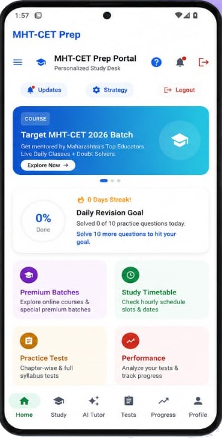

⌂
Student Dashboard
Daily Revision Goal, Study Streak, course card and quick links to key study areas.
Top Rank MHT CET brings your student dashboard, daily revision goals, Gemini AI academic tutor, practice tests, syllabus checklist and progress analytics together for Physics, Chemistry and Mathematics preparation.

The app screens show a clear study flow: start from the home dashboard, get academic help from the AI Tutor, practise questions, track syllabus completion and review progress.
Daily Revision Goal, Study Streak, course card and quick links to key study areas.
Speed Mode, Deep Reasoning and study shortcuts for PCM topics.
Custom tests with question palette, answer sheet grid and navigation.
Track chapters by subject and class with Pending, In Process and Completed statuses.
Study Stats, Quizzes, Mock Exams, consistency score and 90-day heatmap.
Sign In, Sign Up, email and password login, plus Google sign-in option.
Explore the tools shown in the Top Rank MHT CET app.